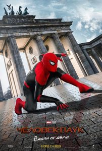
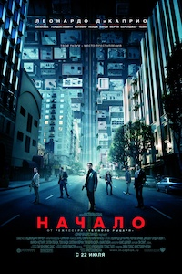
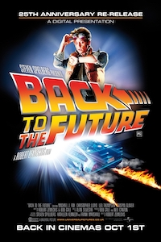

Человек-паук: Вдали от дома
2019
Питер Паркер вместе с друзьями отправляется на летние каникулы в Европу.
Однако отдохнуть приятелям вряд ли удастся — Питеру придется согласиться помочь Нику Фьюри раскрыть тайну существ, вызывающих стихийные бедствия и разрушения по всему континенту.
Список актёров:
Том Холланд, Сэмьюэл Л. Джексон, Зендея, Джейк Джилленхол,
Джейкоб Баталон, Мариса Томей, Коби Смолдерс и др.

Начало
2010
Шпионаж фантастического уровня. С помощью сверхтехнологии герой Ди Каприо и его команда проникают в чужие сны.
Список актёров:
Леонардо ДиКаприо, Джозеф Гордон-Левитт, Эллен Пейдж, Том Харди, Кэн Ватанабэ, Дилип Рао, Киллиан Мёрфи,
Том Беренджер, Марион Котийяр, Пит Постлетуэйт, и др.

Назад в будущее
1985
Безумный ученый и 17-летний оболтус тестируют машину времени и наводят шороху в 1950-х. Классика кинофантастики
Список актёров:
Майкл Дж. Фокс, Кристофер Ллойд, Лиа Томпсон, Криспин Гловер, Томас Ф. Уилсон, Клаудия Уэллс, Марк МакКлюр, Уэнди Джо Спербер,
Джордж ДиЧенцо, Фрэнсис Ли МакКейн и др.
Джентльмены
2019
Успешное возвращение Гая Ричи к корням — острая и живая криминальная комедия с блестящим актерским составом
Список актёров:
Мэттью МакКонахи, Чарли Ханнэм, Генри Голдинг, Хью Грант, Мишель Докери, Джереми Стронг, Эдди Марсан, Джейсон Вонг, Колин Фаррелл, Лайн Рени и др.
Волк с Уолл-стрит
2013
1987 год. Джордан Белфорт становится брокером в успешном инвестиционном банке.
Вскоре банк закрывается после внезапного обвала индекса Доу-Джонса. По совету жены Терезы Джордан устраивается в небольшое заведение, занимающееся мелкими акциями. Его настойчивый стиль общения с клиентами и врождённая харизма быстро даёт свои плоды.
Список актёров:
Леонардо ДиКаприо, Джона Хилл ,Марго Робби Кайл Чандлер, Роб Райнер, П.Дж. Бирн, Джон Бернтал, Кристин Милиоти, Жан Дюжарден,
Мэттью МакКонахи и др.